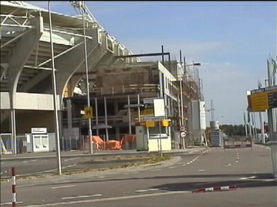

|
Verbouwing op west 23 juli 2001 |

Volgens schema dient de westvleugel over 3 maanden af te zijn.
Zo te zien gaat dat lukken.
Bovenaan komt het supportershome.
Ondanks de bouwvakvakantie wordt er doorgewerkt.
Het middelste gedeelte wordt nog een etage hoger.
Uiteraard wordt er gemetseld in de kleuren mergel en carboon.
Een totaalblik vanaf de zuidzijde.
Een lichtmast priemt nog net boven het supportershome uit.

Aan de oostzijde is inmiddels een grote sleuf gegraven.
©KPD